Initiation & Preprocessing: VisiumHD
initiation-and-preprocessing-visium-hd.Rmd1. Initiation
To initiate a SPATA2 object directly from the Visium
output use the function initiateSpataObjectVisiumHD(). This
example vignette uses data from an example
data set provided by 10X Genomics. You can download the folder here.
Note: It is crucial to install the package arrow in a way that
arrow::read_parquet() works. There are several ways.
Installing the package with
install.packages('arrow', repos = 'https://apache.r-universe.dev')
worked reliably for us.
library(SPATA2)
library(tidyverse)
object <-
initiateSpataObjectVisiumHD(
sample_name = "HumanPancreasHD",
directory_visium = "my/path/to/VisiumHD_folder" # adjust to your liking
)
# show overview
object## An object of class SPATA2
## Sample: HumanPancreasHD
## Size: 106574 x 18085 (spots x molecules)
## Memory: 663.77 Mb
## Platform: VisiumHD (Resolution: 16um)
## Molecular assays (1):
## 1. Assay
## Molecular modality: gene
## Distinct molecules: 18085
## Matrices (1):
## -counts (active)
## Registered images (2):
## - hires (6000x5968 px, not loaded)
## - lowres (600x597 px, active, loaded)
## Meta variables (2): sample, tissue_sectionWhile VisiumHD offers standard resolutions with 16um, 8um and 2um,
the squared nature of the grid of spots allows to analyze data in
individual resolutions. Hence, if you want to analyze your data in
resolution 10um, 24um, 30um or 40um (etc.) you can specify that and the
function reduceResolutionVisiumHD() works in the background
of initiateSpataObjectVisiumHD() to create the resolution
of your liking. Read more on that in this vignette.
Furthermore, you can adjust the resolutions with which images are
used. Particularly, the hires image of the VisiumHD platform is often
too large for R to handle smoothly since R is not particularly efficient
when it comes to handling images of a certain size. This resizing
functionality allows you to adjust the size in which the image is
handled when used in order to optimize the ratio between image
resolution and computational performance. The function required is
resizeImage() which can be called after initiation or used
during initiation with the resize_images argument.
# example genes
example_genes <-
c(
'INS', 'REG3A', 'TTR', 'GCG', 'GHRL', 'SST', 'VIP', 'PPY', 'CARTPT', 'REG1B',
'NPY', 'REG3G', 'ALDOB', 'PCSK1N', 'IAPP', 'IGKC', 'DKK4', 'CHGA', 'IGHA1',
'CPA3', 'PLA2G2A', 'GAL', 'RBP4', 'SLC30A8', 'HBA2'
)
# example object using the resize options
object_resized <-
initiateSpataObjectVisiumHD(
sample_name = "HumanPancreasHD",
directory_visium = "my/path/to/VisiumHD_folder",
square_res = "20um",
genes = example_genes,
unload = FALSE,
resize_images = list(hires = 0.5, lowres = 0.5)
)
# show object
object_resized## An object of class SPATA2
## Sample: HumanPancreasHD
## Size: 68558 x 25 (spots x molecules)
## Memory: 1.31 Gb
## Platform: VisiumHD (Resolution: 20um)
## Molecular assays (1):
## 1. Assay
## Molecular modality: gene
## Distinct molecules: 25
## Matrices (1):
## -counts (active)
## Registered images (2):
## - hires (3000x2984 px, loaded)
## - lowres (300x298.5 px, active, loaded)
## Meta variables (5): sample, square_exp, square_count, square_perc, tissue_sectionNotice the different image resolutions between object
and object_resized in the printed object summary. Images
can be plotted with plotImage().
# left plot
plotImage(object_resized, img_name = "lowres")
# right plot
plotImage(object_resized, img_name = "hires")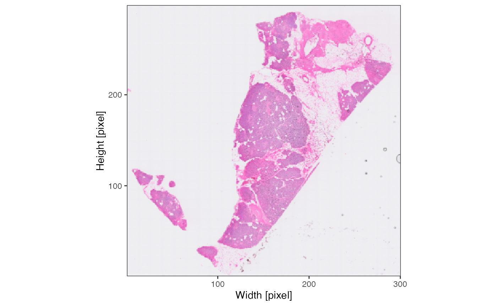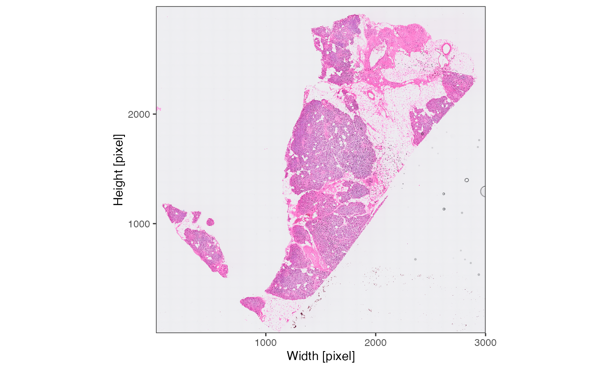
For this vignette, we’ll use the 16um object, simply stored in
object.
2. Image processing
Image processing is not required. However, it facilitates the
integration of histological features as displayed by the histology
image, the Visium platform allows to integrate. The goal of image
processing is to identify the precise spatial outline of the tissue on
the histology slide. The function processImage() is a
wrapper around identifyPixelContent() and
identifyTissueOutline(..., method = "image"). Please refer
to the documentation of either function to obtain more information.
# by default, the active image is always used
# you might need to adjust sigma, frgmt_threshold and other parameters to optimize results
object <- identifyPixelContent(object, frgmt_threshold = c(0.01,0.05))
object <- identifyTissueOutline(object, method = "image")The results of identifyPixelContent() can be plotted
with plotImageMask() and
plotPixelContent().
plotImageMask(object)
plotPixelContent(object, clrp = "jco")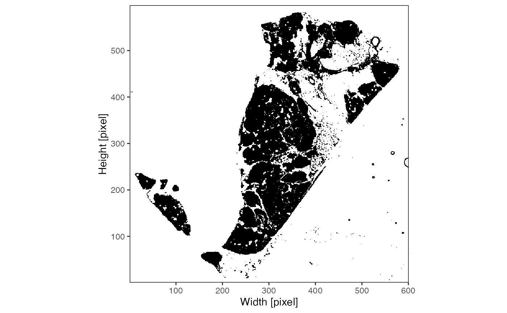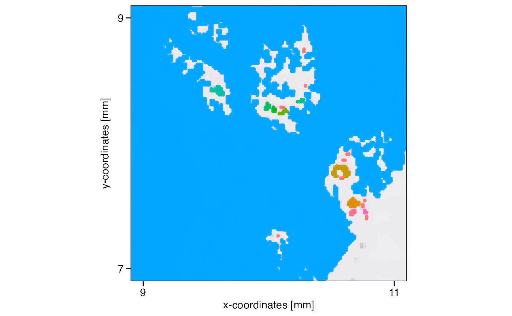
The results of
identifyTissueOutline(..., method = "image") are best
visualized by setting outline = TRUE with the
plotImage() function.
# get colors of one of the known color palettes
cvec <- color_vector("jco")
# left plot
plotImage(object)
# right plot
plotImage(object, outline = TRUE, line_size = 1, line_color = cvec[1], fragments = cvec[2])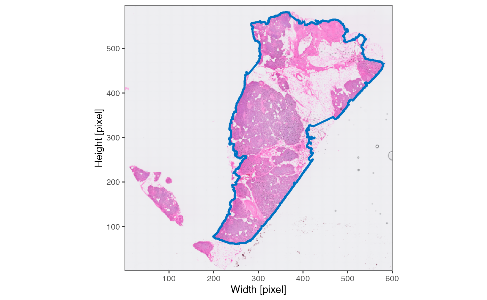
Note, that the tissue fragment identified on the left of the image is located within the capture area of the Visium slide. Hence, it won’t be of importance when it comes to analyzing gene expression.
# left plot
plotImage(object, outline = TRUE, line_size = 1, line_color = cvec[1], fragments = cvec[2]) +
ggpLayerPoints(object, pt_clr = cvec[1], pt_alpha = 0.5, use_scattermore = T) +
ggpLayerFrameByImage(object) +
ggpLayerCaptureArea(object)
# right plot
plotSurface(object, pt_clr = cvec[1], pt_alpha = 0.5) +
ggpLayerCaptureArea(object)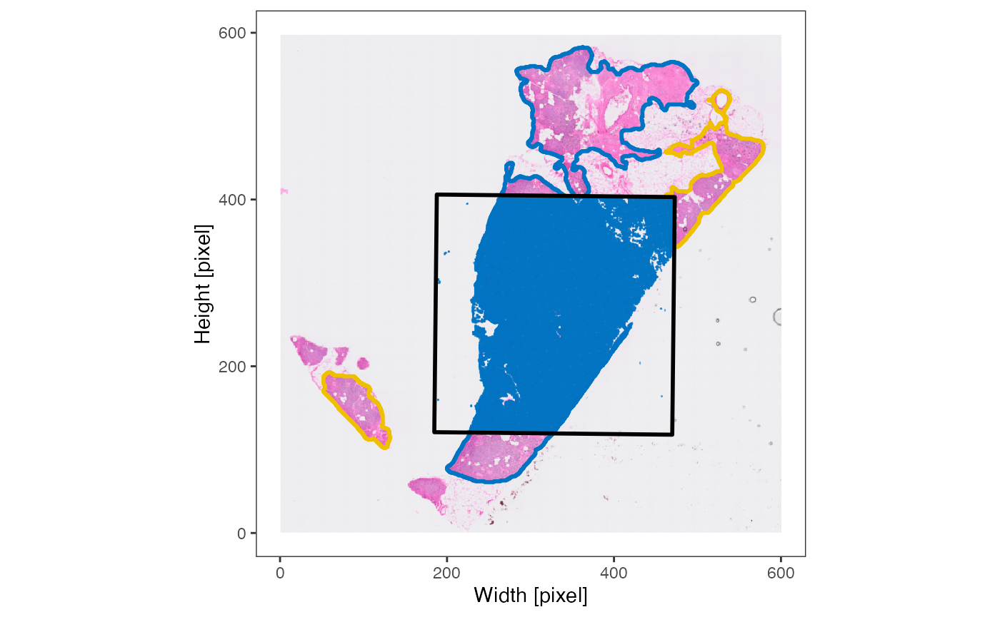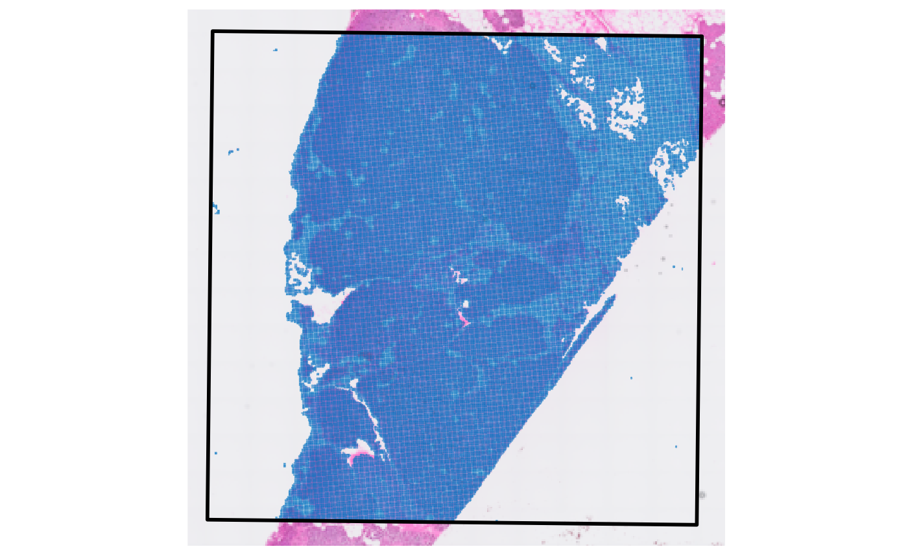
3. Spatial processing
This step should not be skipped! Many functions in SPATA2 need to
know where the edge of the tissue section is and they need to know if
there are multiple tissue sections. This kind of data is not provided
with the standard output of most platforms and needs to be computed.
With spatial processing we particularly refer to the identification of
the tissue edge and spatial outliers - observations that are part of the
data set but lie too far away from the contiguous tissue section to be
considered part of the data set that is of actual interest. In case of
the VisiumHD platform they are usually artefacts. The function
identifyTissueOutline(..., method = "obs") uses the DBSCAN algorithm to
identify potential spatial outliers. The tutorial for non-HD Visium
exemplifies that.
# this is the default input for the visium platform and has already been
# called in initiateSpataObjectVisiumHD().
# if the results do not satisfy you, you can run it over and over again with
# different parameter inputs
object <- identifyTissueOutline(object, method = "obs", eps = "20um", minPts = 3)
xrange <- c("9mm", "11mm")
yrange <- c("7mm", "9mm")
axes_layer <- ggpLayerAxesSI(object, breaks = str_c(c(3, 5, 7, 9, 11), "mm"))
rect_layer <- ggpLayerRect(object, xrange = xrange, yrange = yrange)
# left plot
plotSurface(object, color_by = "tissue_section") +
axes_layer +
rect_layer
# right plot (zoomed in on rectangular)
plotSurface(object, color_by = "tissue_section", xrange = xrange, yrange = yrange) +
axes_layer +
legendNone()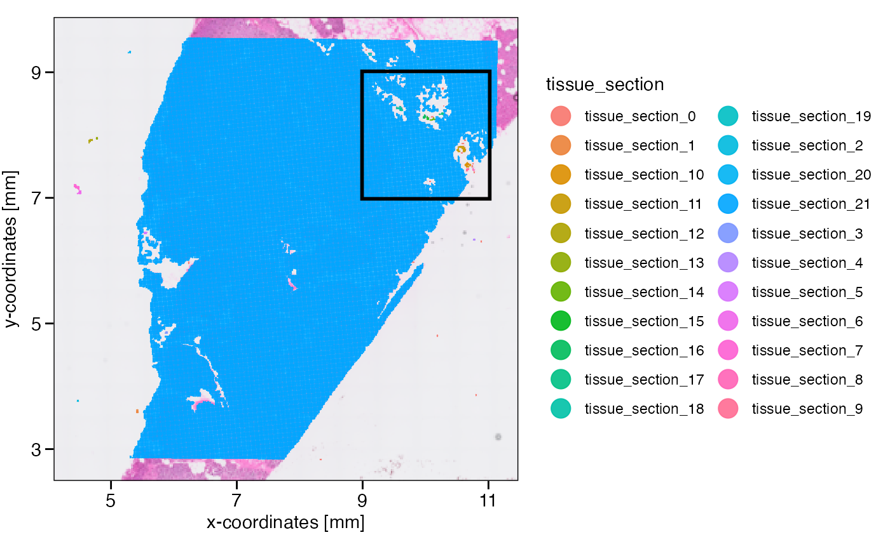
What has been defined as tissue_section_0 could not be
assigned to a tissue section and is always considered a spatial outlier.
Furthermore, observations of tissue sections that are too small are
labeled as spatial outliers, too. What defines too small can be
set with min_section which takes a numeric value defining
the minimal number of observations in order for a tissue section to be
considered large enough. Note that you can also use the results of
identifyTissueOutline(..., method = 'image') for spatial
outlier detection and removal or combine the results of both methods by
setting method = 'image' or
method = c('image', 'obs'). You can play around with these
parameters using identifySpatialOutliers() over and over
again since the resulting sp_outlier meta variable is simply
overwritten. Manual adjustment of this variable is always possible using
getMetaDf() and
addFeatures(..., overwrite = TRUE).
# min_section = 1% of all observations
min_section <- nObs(object)*0.01
min_section
## [1] 1065.74
# uses the results of identifyTissueOutline() to create a logical variable called sp_outlier
object <- identifySpatialOutliers(object, method = "obs", min_section = min_section)
plot_with_outliers <- plotSurface(object, color_by = "sp_outlier", clrp_adjust = c("TRUE" = "blue"))
# remove where sp_outlier == TRUE
object <- removeSpatialOutliers(object)
plot_without_outliers <- plotSurface(object, color_by = "sp_outlier")
# left plot
plot_with_outliers
# right plot
plot_without_outliers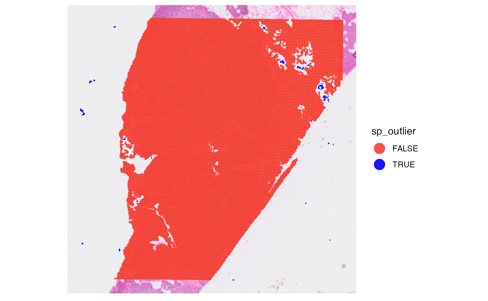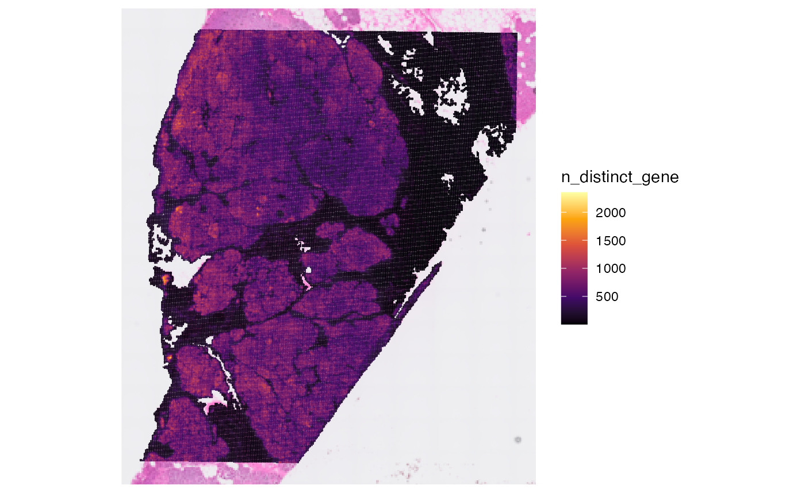
4. Data processing
These steps are about additional noise removal as well as about processing raw counts.
4.1. Data cleaning
First you might want to remove certain genes from the raw count
matrix. There are wrappers for certain steps like
removeGenesStress() and
removeGenesZeroCounts(). Individual genes can always be
removed with removeGenes().
# before
nGenes(object)
## [1] 18085
# removes stress genes
object <- removeGenesStress(object)
# removes genes that were not detected in any of the observations
object <- removeGenesZeroCounts(object)
# afterwards
nGenes(object)
## [1] 18044In some cases there are observations - in case of Visium barcoded
spots - left with no counts at all. If this is the case
removeObsZeroCounts() removes them. If there are none
nothing happens.
# before
nObs(object)
## [1] 106360
# check for and remove observations with zero counts
object <- removeObsZeroCounts(object)
# afterwards
nObs(object)
## [1] 106360Afterwards, you can compute meta data for the observations.
object <- computeMetaFeatures(object)
# plot left
plotSurface(object, color_by = "n_counts_gene")
# plot right
plotSurface(object, color_by = "n_distinct_gene")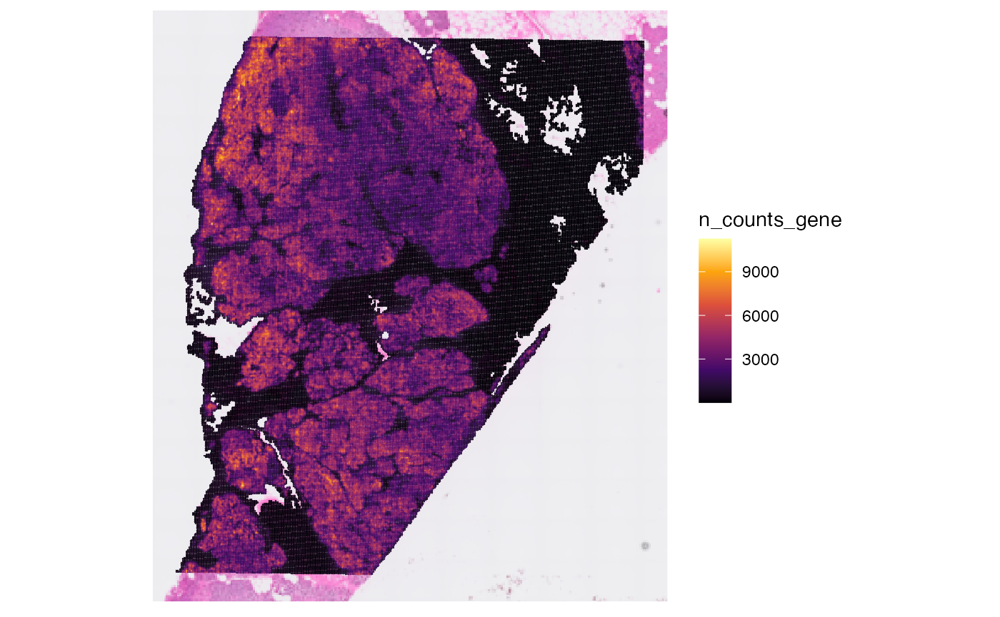
4.2 Matrix processing
The SPATA2 object is initiated with a raw count matrix.
For almost all downstream analysis steps it is recommended to use
processed matrices. The first step is usually log-normalization. To
create a normalized matrix use normalizeCounts(). It uses
Seurat::NormalizeData() in the background. The input
options for method correspond to the options in this
function from the Seurat package. By default, the normalized matrix is
named after input for method, activated and thus used by
default in downstream analysis and visualization. The function
normalizeCounts() can be called multiple times with
different inputs for method which populates the list of
processed matrices in the respective assay. Furthermore, processed
matrices can be added with addProcessedMatrix() if you want
to create them with SPATA2-extern functions. The default matrix that is
used can be set with activateMatrix(). By default,
normalizeCounts() activates the processed matrix it has
created.
# obtain matrix names prior to normalization
getMatrixNames(object)
## [1] "counts"
plot_with_raw_counts <-
plotSurface(object, color_by = "INS", pt_clrsp = "Reds 3") + labs(color = "INS\n(Counts)")
# create log normalized matrix
object <- normalizeCounts(object, method = "LogNormalize")
# obtain matrix names after normalization
getMatrixNames(object)
## [1] "counts" "LogNormalize"
# check active matrix
activeMatrix(object)
## [1] "LogNormalize"
# uses the processed matrix LogNormalize
# use alpha_by to scale transparency to INS as well
plot_with_proc_data <-
plotSurface(object, color_by = "INS", alpha_by = "INS", pt_clrsp = "Reds 3") + labs(color = "INS\n(logNorm)")
# left plot
plot_with_raw_counts
# right plot
plot_with_proc_data

5. Variable genes
Genes of high variability can be identified with wrappers around the some Seurat functions.
# identifies molecules of high variability in the default assay (= gene)
object <- identifyVariableMolecules(object, method = "vst", n_mol = 2500)
var_mols <- getVariableMolecules(object, method = "vst")
str(var_mols)## chr [1:2500] "INS" "REG3A" "TTR" "GCG" "GHRL" "SST" "VIP" "PPY" "CARTPT" ...
# example plots
plotSurfaceComparison(object, color_by = var_mols[1:6], pt_clrsp = "Reds 3", alpha_by = TRUE, nrow = 2)
6. Conclusion and more data sets
That’s it. The object can be used for any downstream analyses such as dimensional reduction, clustering, spatial annotation screening or spatial trajectory screening. Refer to tab Tutorials for more links. Furthermore, you can skim our curated data base of spatial data sets for those of platform VisiumHD using SPATAData.
# load package
library(SPATAData)
# filter for samples from platform VisiumHD
sourceDataFrame(platform == "VisiumHD")## # A tibble: 2 × 18
## sample_name donor_species institution lm_source organ pathology
## <chr> <chr> <chr> <dttm> <chr> <chr>
## 1 HumanLungCancer… Homo sapiens 10X Genomi… 2024-08-04 22:03:33 Lung tumor
## 2 HumanPancreasHD Homo sapiens 10X Genomi… 2024-08-04 22:03:33 Panc… NA
## # ℹ 12 more variables: platform <chr>, source <chr>, web_link <chr>,
## # mean_counts <dbl>, median_counts <dbl>, modality_gene <lgl>,
## # modality_metabolite <lgl>, modality_protein <lgl>, n_obs <int>,
## # n_tissue_sections <int>, obs_unit <chr>, obj_size <lbstr_by>